Watchers
A watcher keeps an eye on something for you (new mail, a chat, a price, a page, a folder on your Mac) and tells you only when there's news. It checks on its own, again and again, and stays quiet the rest of the time.
What a watcher is
Think of a watcher as an agent task that runs on its own schedule. It reads something: a list (mail, chats, posts), part of a web page, a price, a feed, a folder on your Mac, or a window. It compares that with what it saw last time. When something new or different turns up, you get a 👁 card on the Agent screen, a quiet notification, and, when it matters, the assistant says it aloud.
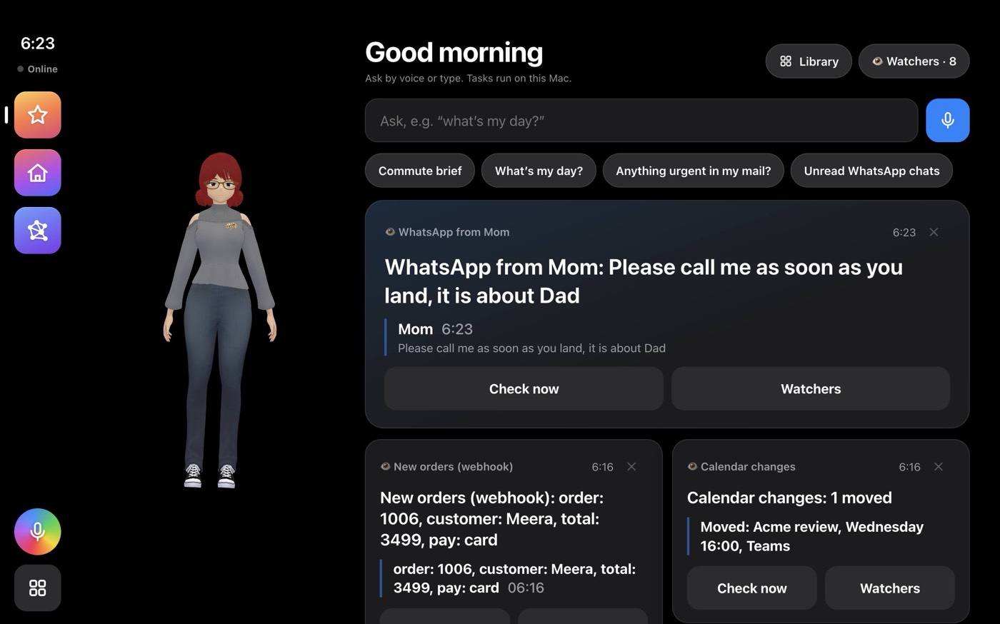
Your first watcher, in a minute
- On the Agent screen, tap 👁 Watchers, then + New watcher. (Also in Settings › Assistant › Watchers.)
- Pick what to watch. Templates are grouped: Slack, Teams, Outlook, WhatsApp, X, Web pages, Shopping, Travel, Work, Life, News and money, Media, On this Mac.
- Answer its question (a product's address, a person's name, a channel…), choose how often and how to tell you.
- Tap Check and save. It reads once to learn what's there now, so it won't tell you about things that were already there.
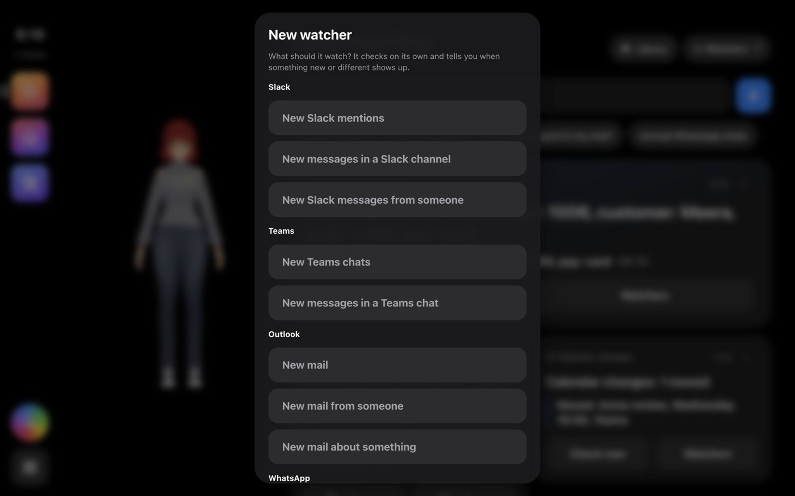
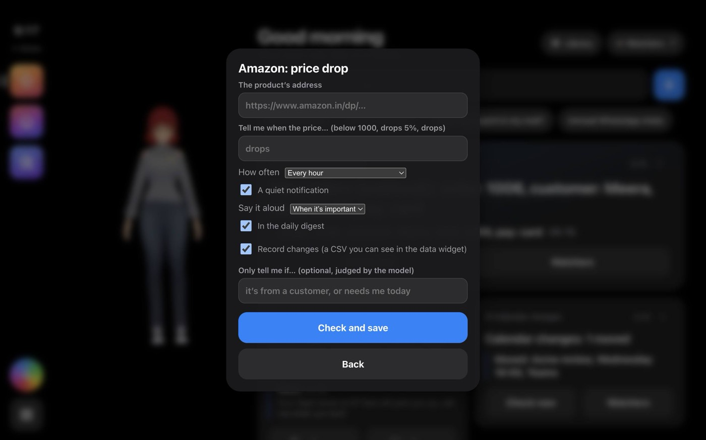
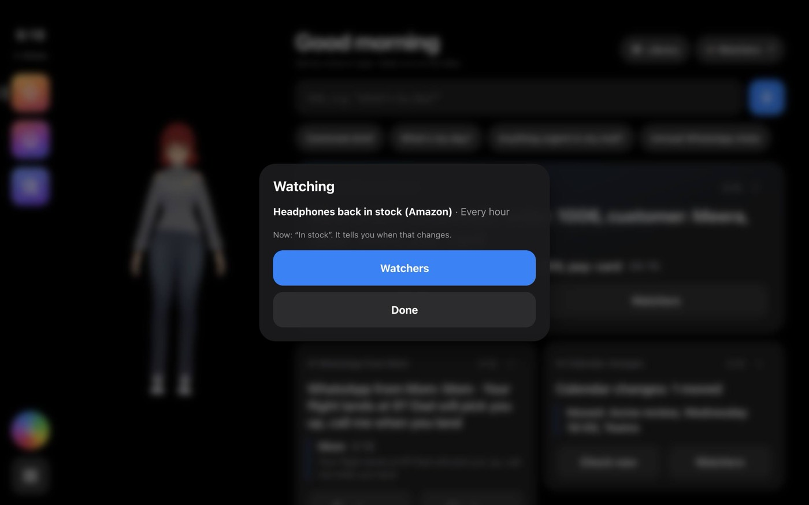
More ways to make one
Say it
Say (or type) what you want: tell me when the price of [a product's link] drops below 12000
, keep an eye on the news about Acme
, let me know when bitcoin goes above 90 lakh rupees
, notify me when ollama/ollama has a new release
. The assistant drafts the watcher and asks before saving it. Say yes and it reads once, as above. If it's missing something (which person? which page?), it opens the form instead.
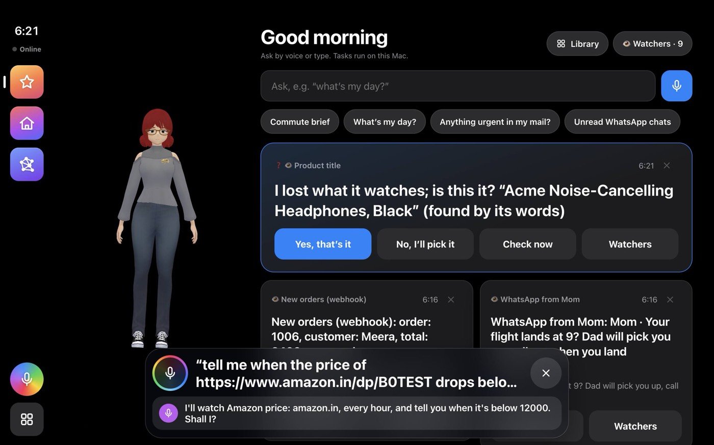
Tap what to watch on a page
Open any page in the agent browser and tap 👁 Watch something here in its bar (or + New watcher › Watch something on a page and give its address). Tap the part to watch: a list, a price, a status, a paragraph. StudioGen suggests the kind from what you tapped (a list: new items; a number: a price; text: changes). You choose the line (below 11000, drops 5%) or the words.
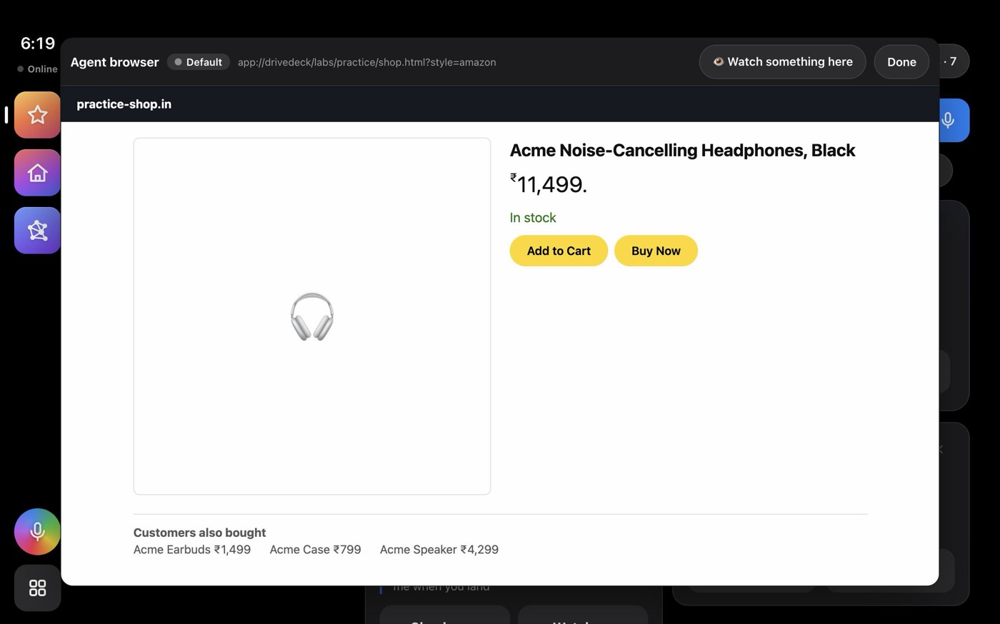
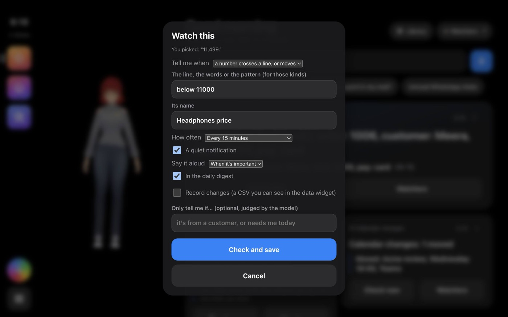
Teach it (pages behind a search or a tab)
+ New watcher › Teach it: the agent browser records what you do (type a search, open a tab), like Teach me for tasks. Then tap Watch this part in the bar and tap what to watch. Each check repeats your steps first. Password, payment and one-time-code fields are never recorded.
From a task's card
A task's result card (one that only reads, like “Unread WhatsApp chats”) has 👁 Watch this. The task then runs on its own (every 30 minutes to start with), and you're told when its answer has something new. You can see this button in the picture under And then: actions.
Paste one
+ New watcher › Paste a watcher takes a watcher as JSON: one a friend copied with Copy as JSON, or one an LLM wrote from the build prompt (Settings › Scripts & tasks › Build with an LLM has a watcher section). Watchers shared in your mesh arrive the same way (paused until you turn them on).
Example: new messages from one person (Varun)
Two ways, both on WhatsApp Web here (the same works for Slack, Teams or Outlook). Sign in to WhatsApp in the agent browser once first (Agent › Library › Agent browser; link your phone).
Way 1: tap his chat in the list
- Open WhatsApp in the agent browser and tap 👁 Watch something here. A bar says what to tap, with Cancel; what's under the pointer is outlined in red.
- Tap Varun's chat in the list. The form already says new items appear in a list, Only items with these words: Varun, and names it New from Varun.
- Check and save. It watches the whole chat list and tells you when a new row has Varun in it, which is a new message from him. (A group whose latest message mentions “Varun” also matches; Way 2 avoids that.)
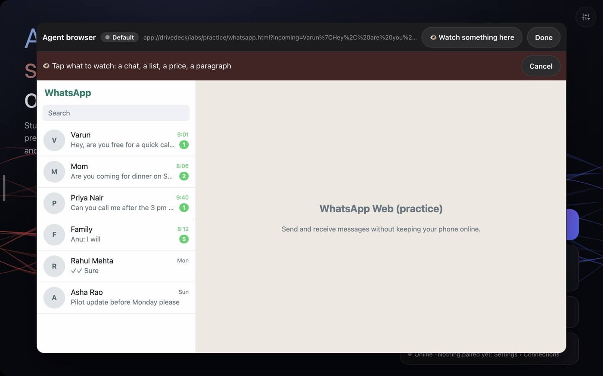
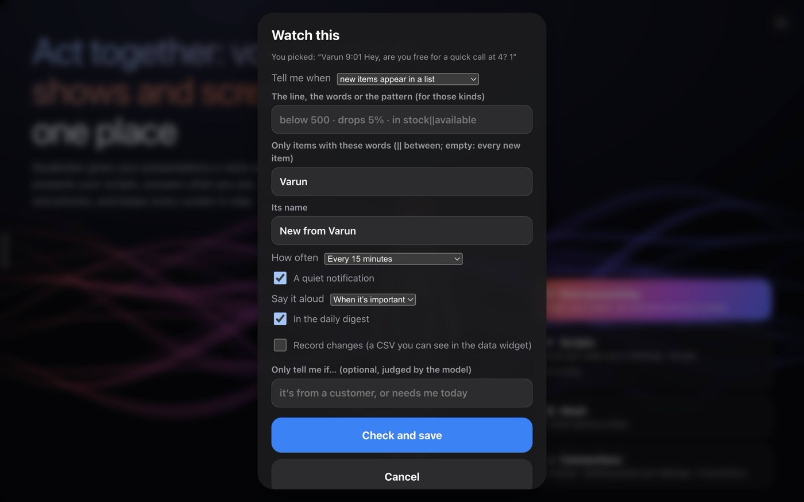
Way 2: Teach it to open his chat, then watch the messages
- + New watcher › Teach it, address
https://web.whatsapp.com/, Start. The bar says Teaching. - Click Varun's chat, as you would. It's recorded as “open the chat named Varun”, not “the first chat”, so it finds his chat wherever it is in the list.
- Tap Watch this part in the bar, then tap one of his messages. The form says new items appear in a list and names it New in Varun.
- Check and save. Each check opens Varun's chat and tells you about each new message in it, including ones you'd miss in the list (several in a row).
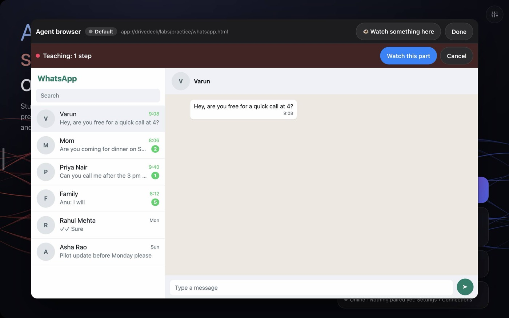
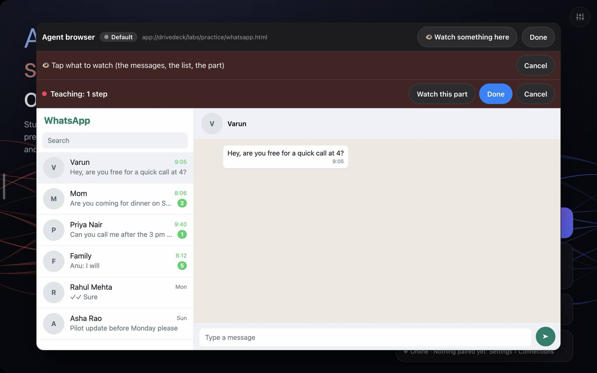
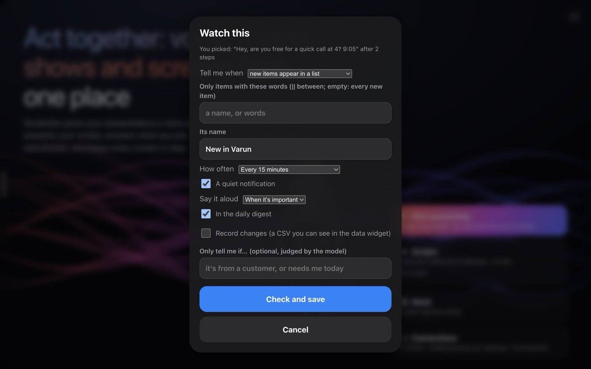
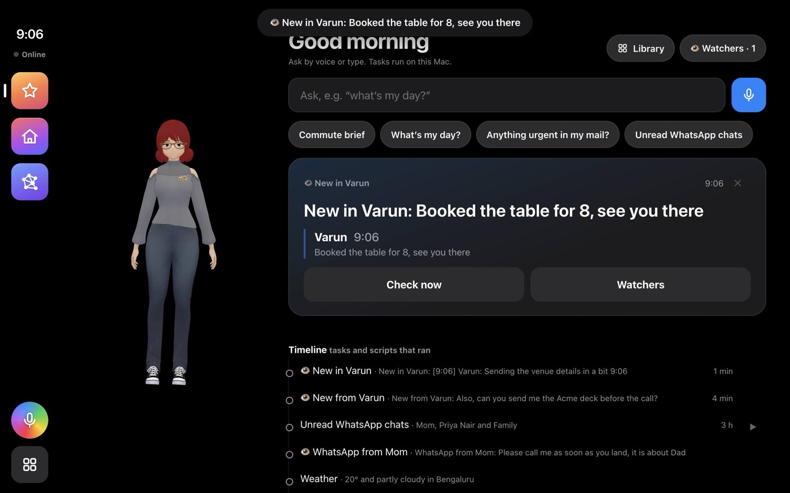
Which to choose? Way 1 is lighter (one page, no clicks each check) and sees his latest message without marking it read. Way 2 sees every message in his chat, but marks them read. With either, add Only tell me if… (for example he needs an answer today
) or Say it aloud: Always in Edit.
The templates
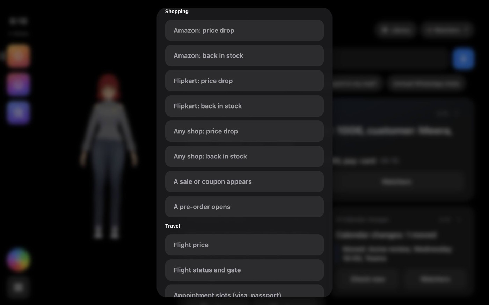
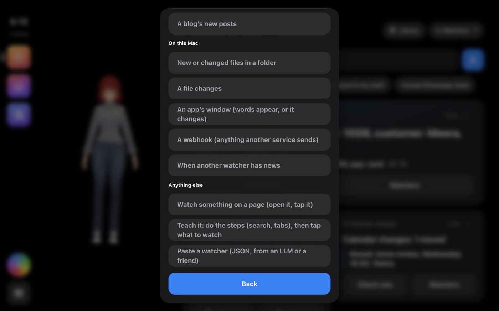
| Group | Templates |
|---|---|
| Slack | New mentions · new messages in a channel · new messages from someone |
| Teams | New chats · new messages in a chat |
| Outlook | New mail · new mail from someone · new mail about something (words) |
| New messages · new messages from someone | |
| X | Your timeline · an account's posts · a search · your mentions (your own account, every 30 minutes to start with) |
| Web pages | A page changes · words appear on a page |
| Shopping | Amazon: price drop, back in stock · Flipkart: price drop, back in stock · any shop: price drop, back in stock (the language model reads the price) · a sale or coupon appears · a pre-order opens |
| Travel | Flight price · flight status and gate · appointment slots (visa, passport) · hotel price · train seat availability |
| Work | Calendar: a meeting moved, added or cancelled · GitHub items assigned to me · a GitHub build failed · a status page shows an incident · a competitor's pricing page changes · new reviews · a shared document changed |
| Life | Parcel status · tickets on sale · new apartment listings · new jobs on a careers page · school or society notices · results published |
| News and money | A topic or company in the news · a stock crosses a price · a crypto coin crosses a price · a government tender or circular · a software release |
| Media | A YouTube channel's new videos · a podcast's new episodes · a subreddit · a Hacker News mention · a blog's new posts (StudioGen finds its feed) |
| On this Mac | New or changed files in a folder · a file changes · an app's window (words appear, or it changes) · a webhook · when another watcher has news |
Some templates (apartment listings, jobs, reviews, notices, tenders) open the page and ask you to tap one item, because every site lays its list out differently.
What it tells you about
| Tell me when… | Example | Told |
|---|---|---|
| New items appear in a list | New mail, a chat, a post, a file | Once per item. A row that only changed its time or unread count, or that you've read since, isn't new. With Also tell me what's gone or moved you also hear what disappeared, and a calendar meeting at a new time is told as moved. |
| Items disappear | A listing is taken down | Once per item |
| It changes | A policy page, a parcel's status | With the lines that changed: Now… / Was… (a clock or date moving doesn't count) |
| A number crosses a line, or moves | below 11000 · above 3000 · drops · drops 5% · moves 3% | A line: once when it crosses, again only after it has gone back. A move: each time it happens. |
| How many there are crosses a line | above 3 open tickets | Once when it crosses |
| Some words appear | in stock||available (|| between choices) | Once when they appear |
| A pattern matches | gate [A-Z]\d+ (for those who know regular expressions) | Once when it matches |
| It appears / disappears | A “Book now” button | Once |
| It looks different | A chart or a map (a small picture of it is compared) | When it differs by more than a set percentage (8% to start with) |
| Nothing has changed for too long | A status page that should update daily (minutes, e.g. 1440) | Once, until it changes again |
How you're told
👁 A card
On the Agent screen and in the timeline, with Check now and Watchers.
A quiet notification
A short note at the top, wherever you are. It never switches screens.
Said aloud
When it's important (the default), Always or Never, in the assistant's own voice: the 3D assistant waves, then speaks with its lips moving. Never while you're presenting or in a conversation.
On your phone
A card in DriveGen; when the phone is away, a notification through StudioGBee that says only “a watcher found something new”.
The daily digest
At 18:00, one card sums up what your watchers saw that day (written by the language model).
Quiet hours
22:00–07:00: no notifications or voice. Cards and the digest still come.
Only tell me if… (on every watcher's form): a rule in your own words, such as it's from a customer, or needs me today
or it's from family and sounds urgent
. The language model reads each piece of news against your rule, and what it remembers about you, and decides whether it matters and whether it's worth saying aloud. The rest is skipped.
Change the digest time and the quiet hours in 👁 Watchers › Digest and quiet hours.
When not to tell
In a watcher's Edit, under When not to tell:
- Ignore lines with: words that mark noise (an ad, a “last updated” line);
||between them. - Only from / Not from: people's names, for lists of messages.
- At most once per so many minutes: news in between is still recorded, but not told.
- Only after it holds for so many checks: no flapping when a price bounces around a line.
- While I'm presenting, keep it for later (on to start with): news waits until your presentation ends, then comes together in one card.
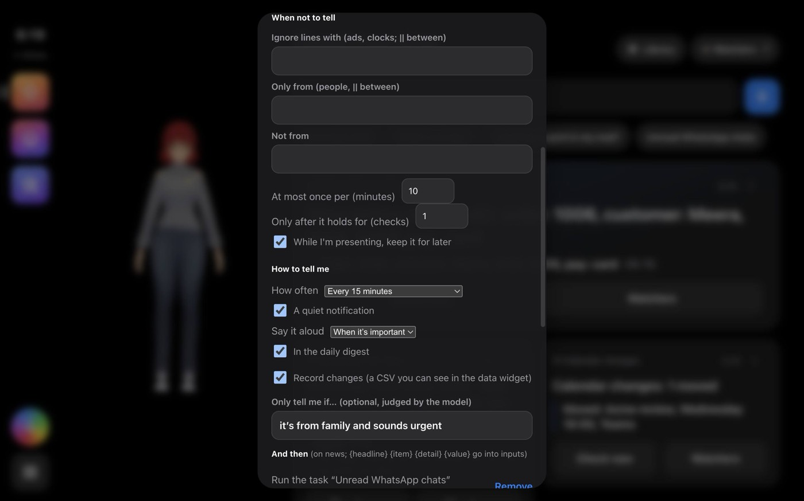
And then: actions
A watcher can do something when it has news (in Edit, under And then):
- Run a task: tasks that only read or tell run straight away. Tasks that act (send, reply, book) ask you first, as always. Inputs can carry the news:
{headline},{item},{detail},{value}. - Run a script: it asks first if the script can act on things (type, click, run a command on the Mac).
- Start a watcher: turn on another, paused, watcher.
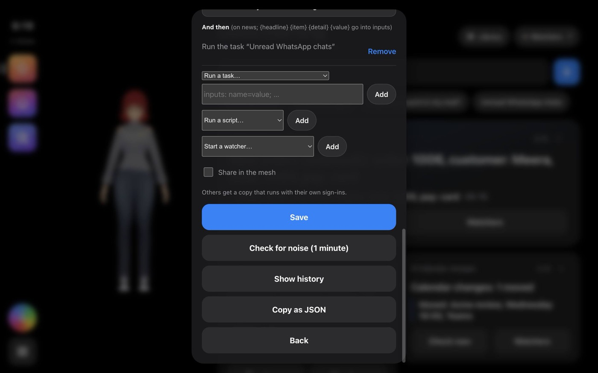
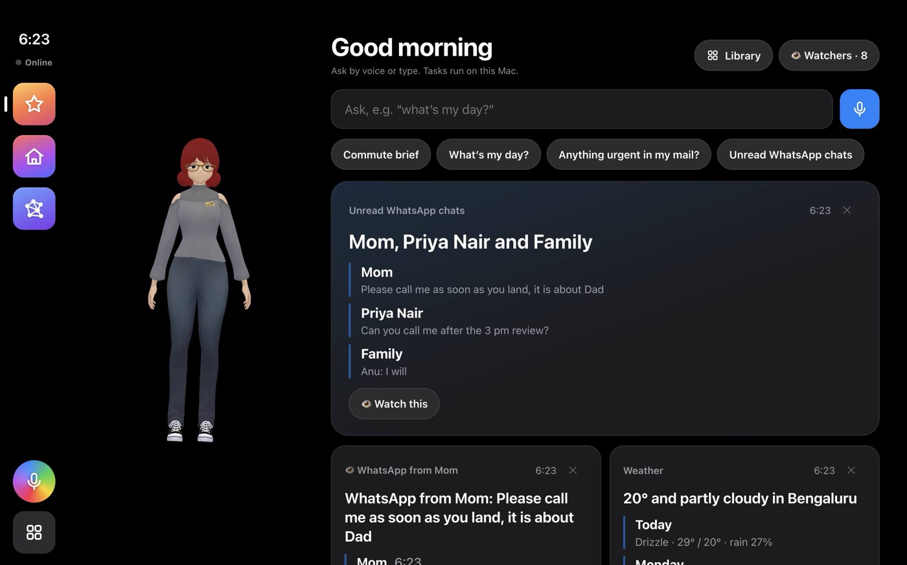
Chains: the template On this Mac › When another watcher has news makes a watcher whose items are another watcher's news. Give it actions, or a rule of its own (“only tell me if…”).
The change history
Tick Record changes on any watcher (price templates have it on): every piece of news is written to a CSV file on your Mac (time, watcher, headline, value, items). Edit › Show history opens it in the data widget: a table, and a line chart when there's a value, like a price over the weeks.
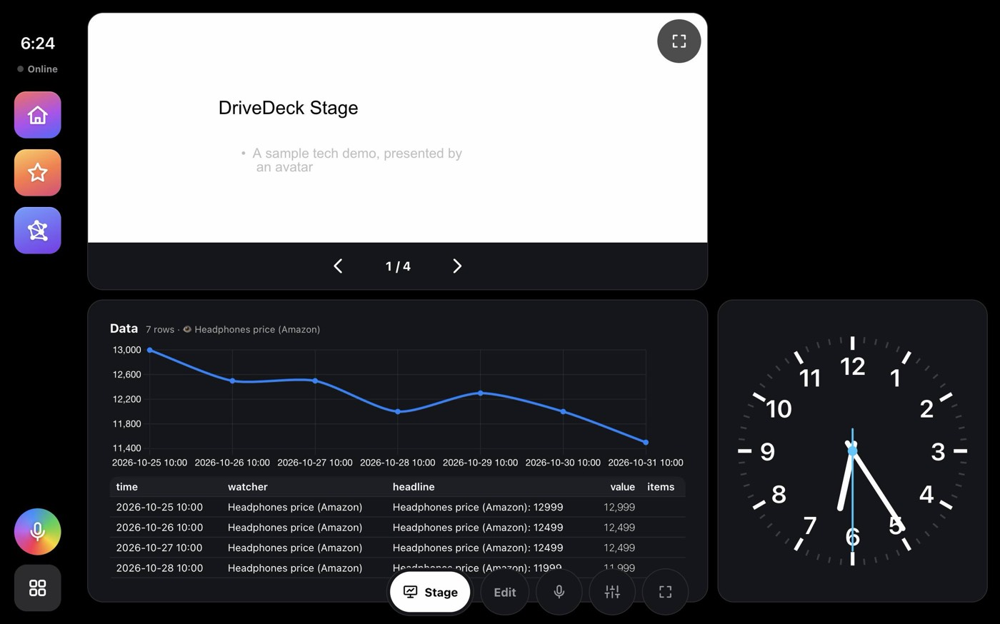
The Watchers list and editing
👁 Watchers lists each watcher: when it last checked, how many items it saw, when it last had news, and when it checks next. Each one has Edit, Check now, Pause/Resume and Delete.
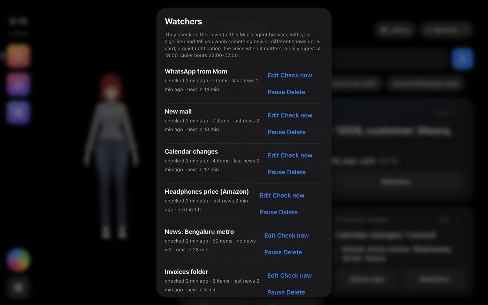
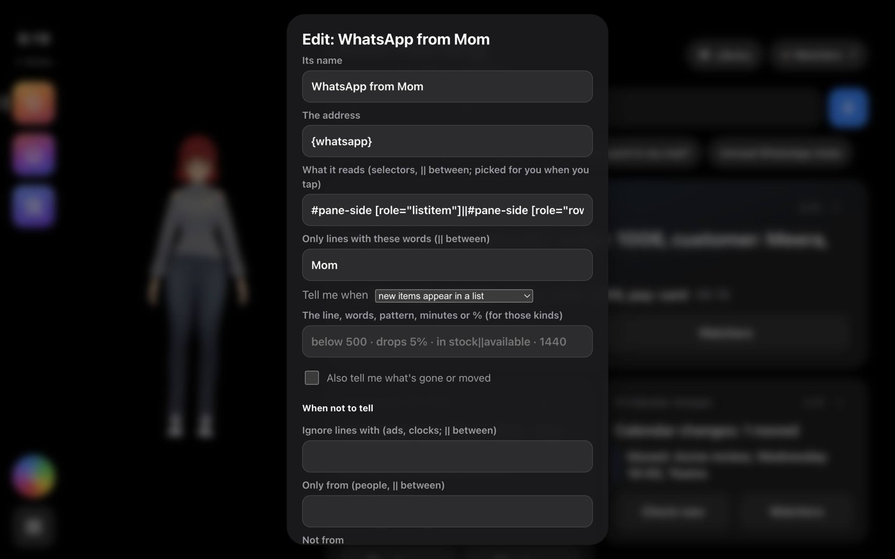
Changing what a watcher reads (its address, its part, its kind) gives it a fresh start: it reads once and tells you only about what's new from then on. Copy as JSON copies it to share. Share in the mesh offers it to your mesh; others get a copy that runs with their own sign-ins.
When something goes wrong
Signed out
A watcher that lands on a sign-in page pauses and leaves a card: Sign in opens that site in the agent browser (or Sign in from here for one running on a Worker). Sign in, then tap Check now; it carries on. A robot check is handled the same way.
The site moved things around
A part you picked by tapping keeps several ways to find it again. When the first stops working, the next one that works is kept (🩹 in the list). A watcher made from a template also tries that template's current way of reading the site, so fixes to the templates (when a site changes) reach watchers you made earlier, without recreating them. If none work, it looks for the part's words on the page, then asks the on-device screen model to find it. Then it asks you once:
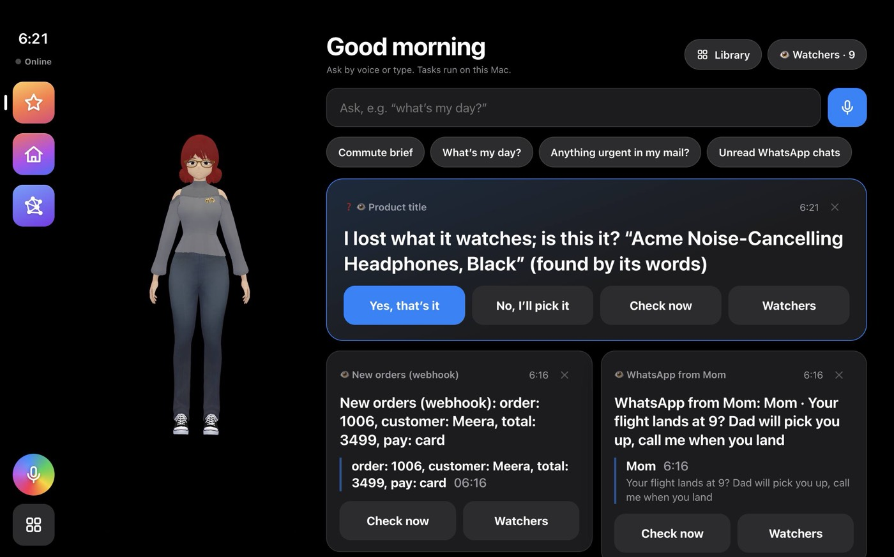
If even that fails, the card says Pick it again.
App windows
Watching another app's window needs Screen Recording for StudioGen. The first time, StudioGen asks. If it was turned down, the watcher pauses with a card that offers Ask me again or Open System Settings (Privacy & Security › Screen Recording).
Checks that fail
A page that doesn't answer is tried again after 5 minutes, then 15, then an hour, never hammering the site. The reason shows in the list (⚠️).
Where they run
This Mac
In StudioGen's agent browser, with your sign-ins. It always leaves one of the 3 browser slots free for what you ask.
A Worker
With a Worker in your mesh (Mesh › Workers), the form has Runs on. A Worker is always on and keeps its own sign-ins. Its news comes back to your Mac sealed, and StudioGBee keeps it while the Mac sleeps. Check now, Pause and Delete reach it.
Your phone
DriveGen gets each piece of news as a card (untick On my phone too to stop). Settings › Assistant › Watchers there shows your Mac's watchers, with Check now and Pause.
After an update or a restart, watchers carry on by themselves: their first checks come within a minute, and what arrived while StudioGen was off is told then. Paused ones (signed out, say) stay paused until you act on their card. Closing StudioGen's window keeps it running in the menu bar, and watchers keep checking (a little less often while it's hidden); Quit (⌘Q) stops them. To have them running after you restart your Mac, tick Start at login in StudioGen's menu-bar menu (it then starts hidden, with watchers running).
Live (in How often) keeps the page open in a hidden browser. The page itself says when the watched part changes, so you hear within a few seconds instead of on a schedule. That costs memory, so keep live watchers for chats, or put them on a Worker.
Webhooks
On this Mac › A webhook gives you an address on your StudioGBee. Whatever another service POSTs to it (a form, a shop's order notice, a home-automation event, up to 16 KB) becomes a 👁 card within seconds, even if it arrives while your Mac is asleep (it's kept for a week). The address is shown in the watcher's Edit. Anyone with the address can post to it, so share it only with the service that needs it.
Things you can say
Make one
tell me when …
· keep an eye on …
· let me know when …
· notify me when …
· watch … for me
See them
what are my watchers
· what am I watching
· what did my watchers see today
Pause and resume
pause the Acme watcher
· stop watching Acme
· start watching Acme again
Privacy and manners
- Watchers read with your sign-ins on your own Mac or Worker. What they see, their history and their CSV files stay there. Only the news itself goes to your own devices, sealed.
- StudioGBee never sees what your watchers found. A phone notification says only “a watcher found something new”. Webhooks are the exception: what an outside service posts reaches the bee as it was sent.
- Watchers that act on things ask first. Password, payment and one-time-code fields are never recorded or typed.
- Be gentle with sites: checks have a little randomness, failures back off, and the X templates check every 30 minutes to start with. Some sites' terms don't allow automated reading; whether to watch them is your choice.
Watchers are part of the agent: see also The agent: tasks for you in the main guide, and the scripts and tasks guide for building your own tasks.